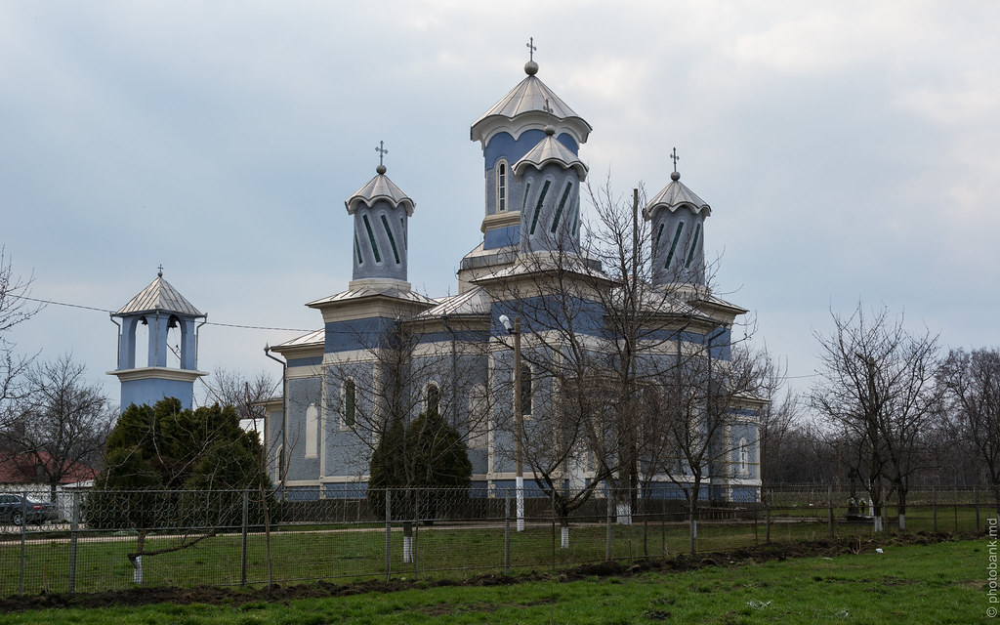

Exploreaza Rautelul
Parcul Satului Rautel

Parcul din satul Răuțel este situat chiar în centrul localității, lângă Primărie și Casa de Cultură. Este principalul loc de întâlnire pentru localnici, fiind folosit des pentru sărbători tradiționale și evenimente comunitare. Fiind la doar 9 km de Bălți, este o zonă verde accesibilă unde se organizează activități culturale, mai ales de sărbătorile de iarnă. Parcul servește și ca punct de legătură între principalele instituții din sat, fiind situat strategic pentru a facilita accesul cetățenilor către Primărie, Oficiul Poștal și școală. De asemenea, în ultimii ani s-au făcut eforturi de întreținere pentru a păstra spațiul adecvat pentru odihna de scurtă durată a trecătorilor.Pe lângă rolul său administrativ, parcul este și un loc de omagiu, găzduind monumente dedicate eroilor căzuți în conflictele armate, care devin centrul ceremoniilor de comemorare din localitate. În timpul verii, umbra vegetației oferă un refugiu răcoros pentru tinerii și bătrânii din sat care se adună la discuții.
Biserica Satului Rautel

Biserica din Răuțel, cu hramul „Adormirea Maicii Domnului”, a devenit recent un punct central de interes în regiune datorită trecerii parohiei sub jurisdicția Mitropoliei Basarabiei. Sub îndrumarea preotului Victor Țurcanu, lăcașul a fost dotat la începutul anului 2026 cu un sistem electronic performant pentru clopote, capabil să redea zeci de melodii religioase. În prezent, viața spirituală a satului este marcată de acest proces de tranziție, existând și o structură provizorie ridicată recent pentru credincioșii care au ales să rămână afiliați vechii structuri bisericești. Pe lângă aspectele administrative, biserica „Adormirea Maicii Domnului” reprezintă nucleul identității culturale a satului Răuțel, fiind locul unde tradițiile bucovinene ale localnicilor se împletesc cu viața religioasă. Aceasta a fost construită inițial pentru a deservi comunitatea de refugiați din Bucovina stabilită aici, păstrând și astăzi un stil arhitectural și o rânduială a slujbelor care reflectă acele rădăcini. Recent, eforturile de modernizare nu s-au rezumat doar la sistemul de clopote, ci au vizat și consolidarea clădirii și înfrumusețarea curții interioare, transformând-o într-un punct de reper vizibil de pe traseul Bălți-Fălești. De asemenea, parohia este implicată activ în viața socială, organizând acțiuni de binefacere și susținând ansamblurile folclorice locale la sărbătorile hramului, când întreaga comunitate se adună pentru a celebra unitatea satului.
Primaria Satului Rautel

Primăria satului Răuțel reprezintă autoritatea publică locală care administrează treburile întregii comunități din raionul Fălești. Aceasta își desfășoară activitatea sub conducerea primarului Tudor Istrati și este responsabilă de gestionarea infrastructurii locale, a serviciilor publice și a bugetului satului. Instituția este punctul central pentru eliberarea actelor administrative, gestionarea resurselor funciare și implementarea proiectelor de dezvoltare, precum iluminatul stradal sau întreținerea drumurilor. În ultimii ani, Primăria a fost implicată activ în proiecte de modernizare, cum ar fi extinderea rețelelor de apeduct și canalizare, dar și în susținerea inițiativelor culturale care păstrează specificul bucovinean al localității. De asemenea, autoritățile locale au jucat un rol simbolic important în deciziile recente ale comunității privind apartenența spirituală a bisericii din sat, oferind suportul logistic necesar pentru buna desfășurare a adunărilor cetățenești. Sediul instituției este situat chiar în centrul satului, fiind ușor accesibil pentru locuitori și vizitatori, și funcționează în strânsă colaborare cu Consiliul Local pentru a decide prioritățile de investiții. Primăria organizează periodic audieri publice și evenimente de hram, menținând o legătură directă cu cetățenii pentru a rezolva problemele cotidiene legate de salubritate, educație și asistență socială.